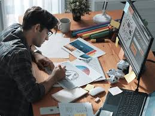

Featured Projects

UI Design Project 1
A creative workspace-focused UI project showcasing layout and color experimentation.

UI Design Project 2
I'm a passionate web developer with a deep interest in creating sleek, modern websites and applications. .

UI Design Project 3
I have experience in web development and UI/UX design.